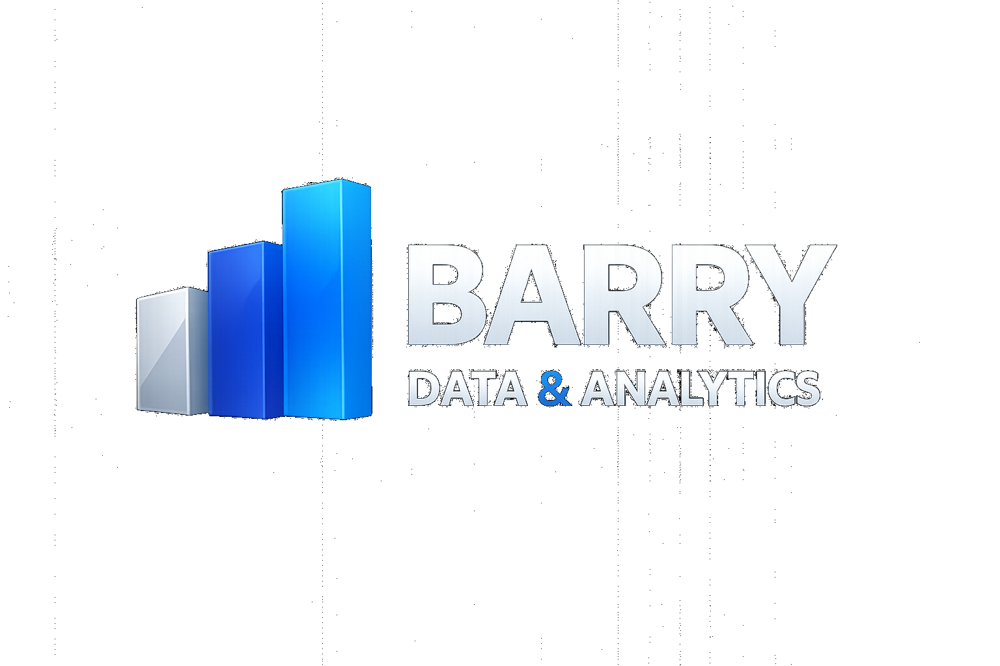

EN
DE
FR
1
→
→
West
North
East
South
—
—
—
—
Interaktive Demos
⌃
BDA Demo Network
Alle ansehen
Power BI Intelligence
Enterprise Command Center
Excel Management Cockpit
Von Excel zum Dashboard
Mehrere Systeme. Eine Übersicht.
Connected Data
Digitale Geschäftsabläufe
Individuelle Lösungen
CRM-Cockpit
Interaktive Reporting-Demo
Modulare Datenlösungen
Learning Performance Dashboard
Performance & Insights Cockpit
Homepage
Reporting-Check
Projektanfrage